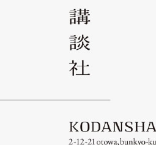

講談社 RMB 86.99 69.99元
正版包郵
簡介
講談社：《中國的歷史》是日本歷史學家的系列著作，是近年來中國歷史方面的重磅力作。叢書自上古到現代，內容涵蓋量大，撰述者均為日本該領域的代表性學者，作品大多構思巧妙，寫法輕鬆，觀點新穎，富於洞見但同時又吸取了近些年來的諸多學術成果，利用了最新出土的史料，是一套可讀性與嚴肅性兼備的歷史佳作。
講談社 RMB 86.99 69.99元
正版包郵
講談社：《中國的歷史》是日本歷史學家的系列著作，是近年來中國歷史方面的重磅力作。叢書自上古到現代，內容涵蓋量大，撰述者均為日本該領域的代表性學者，作品大多構思巧妙，寫法輕鬆，觀點新穎，富於洞見但同時又吸取了近些年來的諸多學術成果，利用了最新出土的史料，是一套可讀性與嚴肅性兼備的歷史佳作。